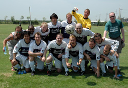
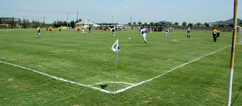

|
Shanghai, 26 & 27th August. British Football Club Tokyo may not have walked off with the trophy at last weekend's Shanghai Shooters tournament, but had there been a prize for noisiest team, they would have won it hands down. A cast of thousands, compared to the eight the TML's other representatives in China, Hibs, brought, should have fostered more calm despite the sweltering heat. Not so.
Even while leading, BFC's propensity for madness brought several moments of meltdown, players bouncing around, donning Harry Enfield wigs and taches and screaming 'Calm down, calm down' at each other, providing pure theatre for rival teams watching from the relative safety of the shade.
A particularly bad-tempered affair against the French broke the sound barrier with veteran defender Steve Watson becoming embroiled in a spat which spilled over after the match and well into the next day.
Under such circumstances it was a minor miracle BFC, one of the four seeded teams, came top of their group, thus ensuring, freakishly, that they would be lumped together with all three fellow seeds on the Sunday.
Even then it had required a Herculean effort from defender Phil Lowes, who scored three goals on the first day, to show the BFC's strikers how to find the onion bag.
Having peeled themselves off the floors of various bars at 6 a.m. for most of the weekend, it was perhaps asking a bit much for BFC to beat the Shanghai Shooters and the hosts recovered from a lacklustre showing on the Saturday to win 2-0.
A goalless draw against a Strollers team intent on kicking off scuppered any realistic hopes BFC had of reaching the final, although more Ian 'Frodo' Warner's furious tirade at the match referee provided more warm memories.
BFC salvaged some pride, though, in a 1-0 win over a shattered Hibs team down to seven men and held together with sticky tape in their final game. Goalkeeper Jerky ensured BFC did not go home empty-handed, picking up the 'best goalkeeper' award, although the defenders will claim a huge assist after giving the big Finn plenty of target practice.
Special mentions to James Morson, Brian Doyle and Simon Sparkes for some inspired play over the weekend and to those not mentioned for some red-hot form in the local bars and clubs.

Report – BFC
|